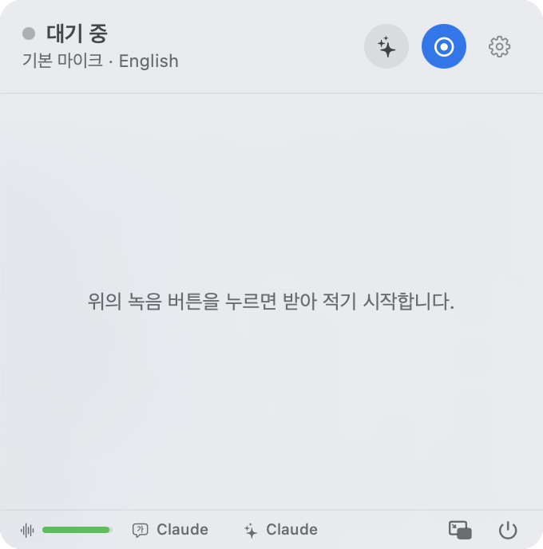

STEP 01 / 07 · 시작
메뉴바 아이콘을 누르세요
화면 맨 위 메뉴바의 마이크 아이콘을 누르면 팝업이 열리고, 다시 누르면 닫힙니다.
팝업 위쪽 빈 곳을 잡고 끌면 원하는 자리로 옮길 수 있어요. 받아 적은 글은 저절로 저장됩니다.
![Ezrite 메뉴바 아이콘]() Wi-Fi10월 15일 오후 3:00
Wi-Fi10월 15일 오후 3:00
화면 맨 위 메뉴바의 마이크 아이콘을 누르면 팝업이 열리고, 다시 누르면 닫힙니다.
팝업 위쪽 빈 곳을 잡고 끌면 원하는 자리로 옮길 수 있어요. 받아 적은 글은 저절로 저장됩니다.